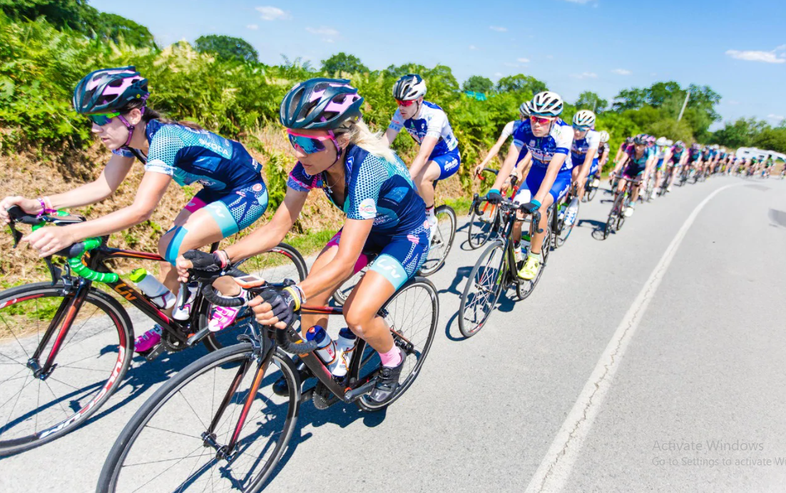
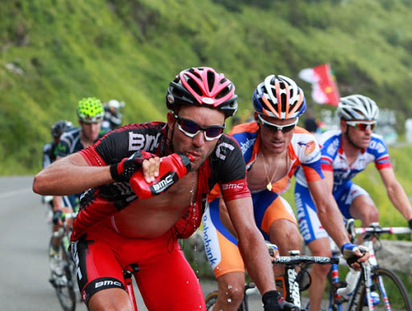
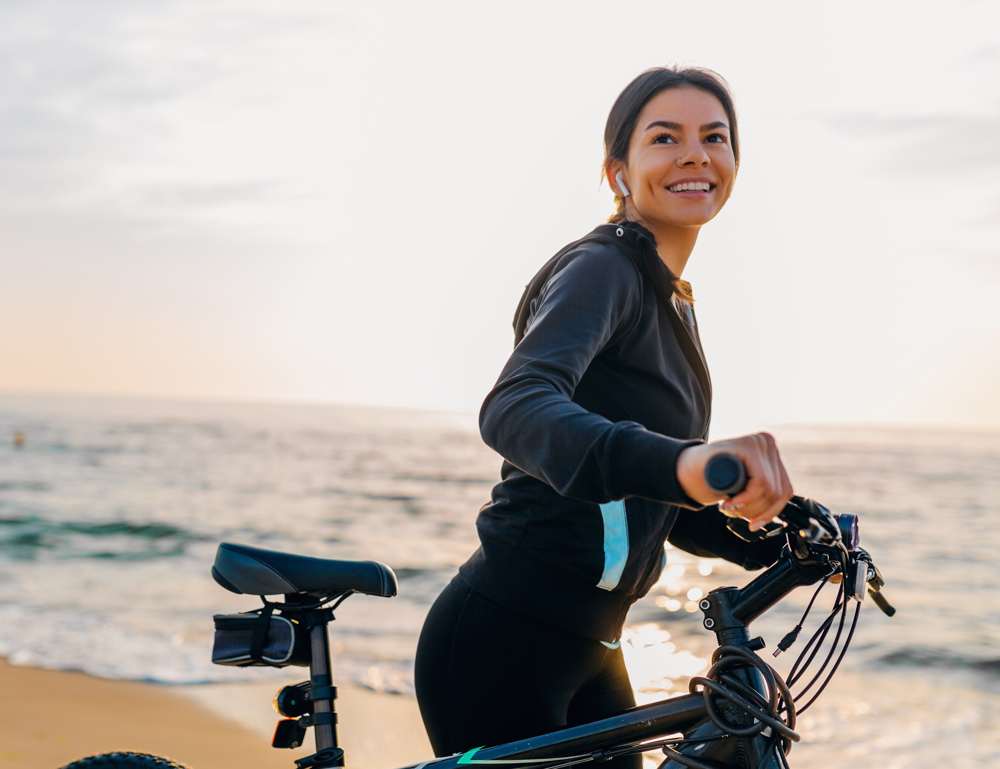
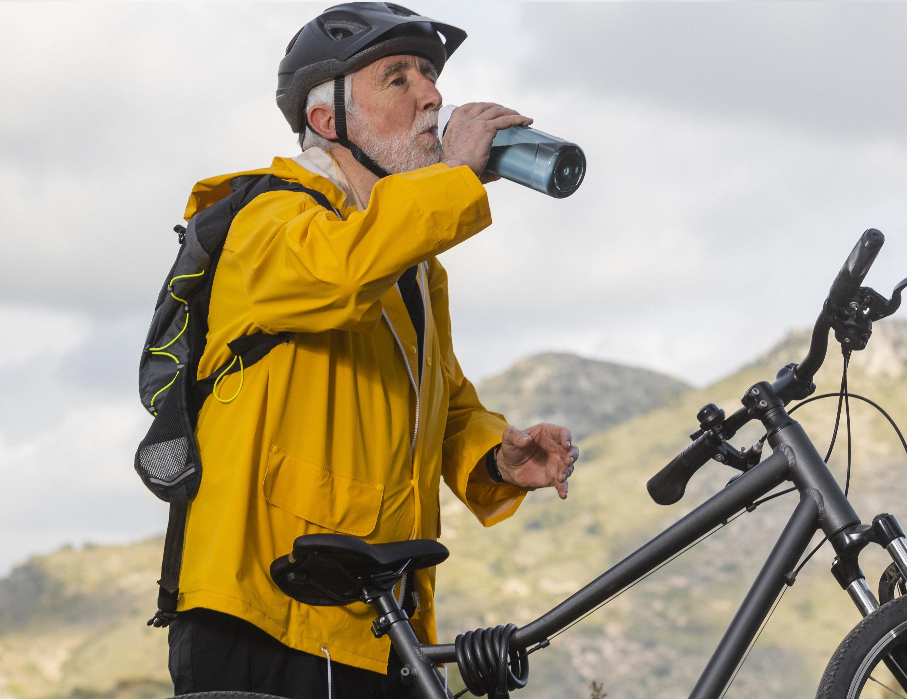

Sweat courses down the faces of the as they sprint for the race finish on the Champs-Elysee each July, crouched
over their handlebars, pain etched on their faces…
Seen by many as the pinnacle of sporting endurance, 'Le Tour' is a race where the rider’s average 40 km/h
over
thousands of kilometers of challenging terrain.
Eddy Merckx, who won the Tour de France four times in the 1970s, said: "Cyclers live with pain. If you can't
handle it, you'll win nothing."
You’ll also win nothing without superhuman fitness levels, good nutrition and around, of fluid on average per
stage – the last to replace the seven liters of fluids that you lose, on average, through sweat during each
stage.
"Cyclers live with pain. If you can't handle it, you'll win nothing."
Refresh your ride

Of course, we’re not all scaling Alps in lycra, and you don’t have to drink this much water during your
casual Sunday afternoon cycle or jog around the local park.
All the same, adequate hydration both before and during exercise is critical for all of us. It helps
regulate body temperature, replace fluid, and restore water levels after exercise.
When the mercury climbs above 30°C, dehydration can quickly lead to a 2% loss of body weight and decreased
endurance and skill. Dial that up to a 3%, and you’re losing muscular power and strength.
The more active you are, the greater your water needs to sustain peak performance.
Tour de France cyclists tend to consume water-based drinks that contain carbohydrates, electrolytes, and
vitamins. But they are exercising extremely intensively for hours on end.
For the rest of us, plain old H2O will do. We lost more water than minerals through sweat during casual
exercise, so focus on replacing the fluids you lose with water alone.


Hydration for everyone
You can do so while you watch your heroes flash by during the Tour de France, for instance. Nestle Waters
mineral water brand Vittel became an official Tour partner in 2008 and distributes water to spectators along
the route each year – in the spirit of sharing, vitality and fun.
Our partnership with the Tour de France stems dates back to 1923 when Perrier first supplied water to the
race.
Nestlé is committed to promoting hydration for everyone, in line with our company purpose and in support of
the United Nations Sustainable Development Goals.
Your water needs differ depending on how old are you, where you live, what you eat, and how much exercise
you take. But either you’re pushing the pedals, sitting at a desk, or cheering on your heroes on the Champs
Elysees, it’s vital that you stay cool.
Stay hydrated!
Hydration for everyone
You can do so while you watch your heroes flash by during the Tour de France, for instance. Nestle Waters
mineral water brand Vittel became an official Tour partner in 2008 and distributes water to spectators along
the route each year – in the spirit of sharing, vitality and fun.
Our partnership with the Tour de France stems dates back to 1923 when Perrier first supplied water to the
race.
Nestlé is committed to promoting hydration for everyone, in line with our company purpose and in support of
the United Nations Sustainable Development Goals.
Your water needs differ depending on how old are you, where you live, what you eat, and how much exercise
you take. But either you’re pushing the pedals, sitting at a desk, or cheering on your heroes on the Champs
Elysees, it’s vital that you stay cool.
Stay hydrated!